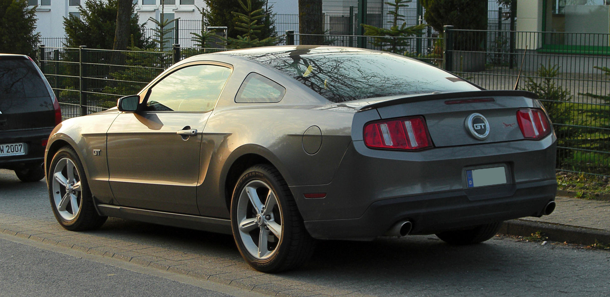

jak powstał ford mustang 5 generacja

Ford Mustang V został zaprezentowany po raz pierwszy w 2004 roku.
10 lutego 2003 roku ogłoszono, że powstanie zupełnie nowa generacja Mustanga, bardziej niż poprzednicy nawiązująca swoim wzornictwem do modeli z lat 60[32]. Prototyp pojazdu został pokazany na targach North American International Auto Show. Nie różnił się on zbytnio od modelu seryjnego produkowanego później. Ogłoszono też, że nowy Mustang będzie powstawał w fabryce AutoAlliance International (AAI) w miejscowości Flat Rock w stanie Michigan.
ford mustang
śilnik
wersje froda